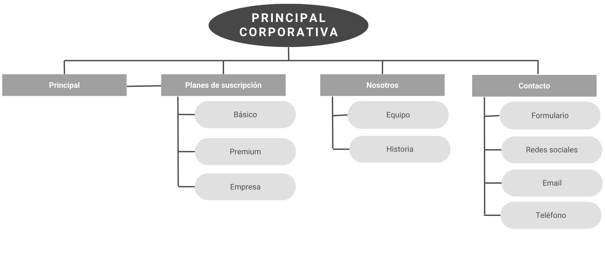

Caso Práctico 3
Proyecto: Página Corporativa
Eleonora Rodríguez
Resumen del proyecto
El Producto
El objetivo de esta app es de ofrecer servicios informáticos a los usuarios con tres planes de suscripción y una navegación rápida y sencilla.
Duración
Dos meses (abril y mayo de 2023).
El Problema
Muchos usuarios manifestaron discomformidad con las páginas actuales que ofrecen el mismo servicio, ya que se concentran más en las animaciones y el diseño gráfico llamativo que en la claridad al momento de ofrecer los servicios.
El Objetivo
Hacer una página corporativa simple y clara.
Mi Rol
Diseñadora UI e investigadora UX.
Responsabilidades
Investigación de usuarios, creación de recorridos de usuario, creación de esquemas, creación de prototipos de baja y alta fidelidad.
Investigación sobre los usuarios
En esta investigación nos enfocamos en lo que busca la audiencia que tenemos como objetivo y los potenciales clientes.
En base a la competencia, les preguntamos lo que les falta y lo que podemos aportar con nuestro proyecto.
Puntos débiles de los usuarios
Gráficos
Los usuarios consideran que los diseños de otras apps priorizan demasiado los gráficos y animaciones sobre los contenidos.
Transparencia
Muchos contenidos relevantes para los usuarios (como los términos y condiciones de servicios) no son lo suficientemente claros y explícitos al momento de adquirir los servicios.
Contenidos
Los usuarios consideraron que muchas apps de este mismo tipo incluyen contenidos irrelevantes que no les interesan.
Persona 1
Juan Domínguez
Planteamiento del problema: Juan Domínguez es un emprendedor de 42 años que necesita un servicio de hosting web para su negocio.
Edad: 42
Formación: Universitario
Localidad: Buenos Aires
Familia: Divorciado, sin hijos
Ocupación: Emprendedor
"Me gustan las cosas simples, sin tantos adornos irrelevantes"
Juan Domínguez es un emprendedor de 42 años. Está divorciado y no tiene hijos. Hace poco decidió dejar su trabajo y emprender para abrir su propio negocio en la ciudad. Está buscando un servicio de hosting web para abrir su propio e-commerce y encontrar potenciales clientes en línea.
Objetivos:
- Quiero contratar un servicio y poder tenerlo disponible de inmediato.
- Quiero poder autogestionar la contratación de mi servicioe.
Frustraciones:
- No quiero tener que esperar a que activen mi servicio contratado.
- No quiero tener que llamar a un agente de atención al cliente cada vez que tenga un problema.
Persona 2
Perla Barbieri
Planteamiento del problema: Perla Barbieri es una administrativa de 40 años que quiere contratar un servicio de alojamiento en la nube para guardar datos y archivos.
Edad: 40
Formación: Universitaria
Localidad: Buenos Aires
Familia: Casada, tiene dos hijos
Ocupación: Administrativa
"Quiero saber lo que estoy contratando, sin sorpresas"
Perla Barbieri es una administrativa de 40 años que desea contratar un servicio de alojamiento en la nube para almacenar sus datos y archivos privados y mantenerlos seguros.
Objetivos:
- Quiero saber claramente el servicio que estoy contratando.
- Quiero disponer de varias opciones.
- Quiero que el servicio esté disponible 24/7.
Frustraciones:
- No quiero que me activen promociones sin mi consentimiento.
- No quiero sorpresas en mi facturación.
Mapa del sitio
Prototipo de baja fidelidad (tamaño desktop/escritorio):
Prototipo de baja fidelidad (tamaño tablet):
Prototipo de baja fidelidad (tamaño móvil):
Estudio de usabilidad
Parámetros
Tipo de estudio: Moderado
Ubicación: Buenos Aires, Argentina
Participantes: 5
Duración: 30 minutos
Hallazgos
Hallazgo 1: Los usuarios se sintieron conformes con que la lectura de los términos y condiciones sea un paso más antes de hacer la adquisición del servicio.
Hallazgo 2: Los usuarios sintieron más confianza en la marca y la app, ya que sus contenidos les resultaban más claros y transparentes.
Hallazgo 3: Los usuarios consideraron que el diseño es limpio y aporta seriedad, al carecer de excesivas animaciones y diseños gráficos extravagantes.
Prototipo de alta fidelidad (tamaño desktop/escritorio):
Prototipo de alta fidelidad (tamaño tablet):
Prototipo de alta fidelidad (tamaño móvil):
Consideraciones de accesibilidad
Para la elección de la paleta de colores, se tomaron en cuenta las personas con posibles problemas de visión que no pudieran distinguir bien entre ellos.
Todos los íconos se encuentran complementados por palabras para facilitar la lectura en dispositivos de asistencia para quienes tienen problemas visuales.
El diseño intenta no abrumar a los usuarios con demasiadas cosas juntas en un mismo espacio. Se dejaron espacios negativos en blanco para que la navegación sea más agradable y menos confusa.